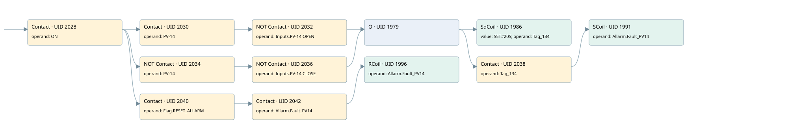

pv-14 cold air filter fault
filter · 검색 색인 순서 21 · 원본 내부 NID 추정 20
백업 PLF 원본의 2751965 바이트 위치에서 복원한 XML. 검색 문서 1902의 객체 키 161022004a11000000000000와 연결했다. 이름 해석 12/12개. 남은 RefId는 상수 또는 미해석 참조다.
연결 구조 다시 그리기
원본 Part/PCon/Wire를 이용한 연결도다. TIA 화면의 래더 배치 또는 실행 결과를 재현한 그림은 아니다. 핀 연결은 아래 표와 원본 XML을 기준으로 읽는다. 노드 위에 마우스를 두면 피연산자 이름을 볼 수 있다.

접점·코일·블록과 피연산자
| Part UID | Gate | Negated 핀 | 연결 피연산자 |
|---|---|---|---|
| 2028 | Contact | operand = ON | |
| 2030 | Contact | operand = PV-14 | |
| 2032 | Contact | operand | operand = Inputs.PV-14 OPEN |
| 2034 | Contact | operand | operand = PV-14 |
| 2036 | Contact | operand | operand = Inputs.PV-14 CLOSE |
| 1979 | O | ||
| 1986 | SdCoil | value = S5T#20S; operand = Tag_134 | |
| 2038 | Contact | operand = Tag_134 | |
| 1991 | SCoil | operand = Allarm.Fault_PV14 | |
| 2040 | Contact | operand = Flag.RESET_ALLARM | |
| 2042 | Contact | operand = Allarm.Fault_PV14 | |
| 1996 | RCoil | operand = Allarm.Fault_PV14 |
접점 경로를 펼친 조건식
Contact·O/A·비교기의 원본 연결을 읽기 쉽게 펼친 보조 해석이다. POWER는 전원 레일 시작을 뜻한다. 호출 블록·에지·타이머의 내부 동작과 다중 쓰기 순서는 이 표로 실행 검증하지 않았다. 미해석 핀과 RefId는 원문 연결표에서 확인한다.
| UID | 동작 | 대상 | 원본 접점 경로 | 내용 |
|---|---|---|---|---|
| 1986 | SdCoil | Tag_134 | (((ON AND PV-14) AND NOT [Inputs.PV-14 OPEN]) OR ((ON AND NOT [PV-14]) AND NOT [Inputs.PV-14 CLOSE])) | 시간 동작 SdCoil; 타이머 의미 추가 확인 / 시간 인자 S5T#20S |
| 1991 | SCoil | Allarm.Fault_PV14 | ((((ON AND PV-14) AND NOT [Inputs.PV-14 OPEN]) OR ((ON AND NOT [PV-14]) AND NOT [Inputs.PV-14 CLOSE])) AND Tag_134) | 조건 성립 시 Set |
| 1996 | RCoil | Allarm.Fault_PV14 | ((ON AND Flag.RESET_ALLARM) AND Allarm.Fault_PV14) | 조건 성립 시 Reset |
원본 배선 연결
| Wire UID | 동일 Wire 연결 끝점 |
|---|---|
| 2044 | Powerrail {} ↔ Part 2028.in |
| 2009 | ORef 1997 (ON) ↔ Part 2028.operand |
| 2029 | Part 2028.out ↔ Part 2030.in ↔ Part 2034.in ↔ Part 2040.in |
| 2010 | ORef 1998 (PV-14) ↔ Part 2030.operand |
| 2031 | Part 2030.out ↔ Part 2032.in |
| 2011 | ORef 1999 (Inputs.PV-14 OPEN) ↔ Part 2032.operand |
| 2033 | Part 2032.out ↔ Part 1979.in1 |
| 2013 | ORef 2000 (PV-14) ↔ Part 2034.operand |
| 21 | Part 2034.out ↔ Part 2036.in |
| 23 | ORef 24 (Inputs.PV-14 CLOSE) ↔ Part 2036.operand |
| 22 | Part 2036.out ↔ Part 1979.in2 |
| 2016 | Part 1979.out ↔ Part 1986.in ↔ Part 2038.in |
| 2017 | ORef 2002 (S5T#20S) ↔ Part 1986.value |
| 2018 | ORef 2003 (Tag_134) ↔ Part 1986.operand |
| 2019 | ORef 2004 (Tag_134) ↔ Part 2038.operand |
| 2039 | Part 2038.out ↔ Part 1991.in |
| 2021 | ORef 2005 (Allarm.Fault_PV14) ↔ Part 1991.operand |
| 2023 | ORef 2006 (Flag.RESET_ALLARM) ↔ Part 2040.operand |
| 2041 | Part 2040.out ↔ Part 2042.in |
| 2024 | ORef 2007 (Allarm.Fault_PV14) ↔ Part 2042.operand |
| 2043 | Part 2042.out ↔ Part 1996.in |
| 2026 | ORef 2008 (Allarm.Fault_PV14) ↔ Part 1996.operand |
식별자 해석 근거 12개
| ORef UID | RefId | 이름 | IdentXmlPart 파일 | 해석 방법 |
|---|---|---|---|---|
| 1997 | 52 | ON | 0594-IdentXmlPart.xml | UID/RID + search-text + NID agreement |
| 1998 | 268 | PV-14 | 0594-IdentXmlPart.xml | UID/RID + search-text + NID agreement |
| 1999 | 313 | Inputs.PV-14 OPEN | 0596-IdentXmlPart.xml | UID/RID + search-text + NID agreement |
| 2000 | 268 | PV-14 | 0594-IdentXmlPart.xml | UID/RID + search-text + NID agreement |
| 24 | 315 | Inputs.PV-14 CLOSE | 0596-IdentXmlPart.xml | UID/RID + search-text + NID agreement |
| 2003 | 273 | Tag_134 | 0594-IdentXmlPart.xml | UID/RID + search-text + NID agreement |
| 2002 | 317 | S5T#20S | 0597-IdentXmlPart.xml | literal candidate: UID/RID/NID + nearby named declarations + search-text agreement |
| 2004 | 273 | Tag_134 | 0594-IdentXmlPart.xml | UID/RID + search-text + NID agreement |
| 2005 | 275 | Allarm.Fault_PV14 | 0596-IdentXmlPart.xml | UID/RID + search-text + NID agreement |
| 2006 | 276 | Flag.RESET_ALLARM | 0596-IdentXmlPart.xml | UID/RID + search-text + NID agreement |
| 2007 | 275 | Allarm.Fault_PV14 | 0596-IdentXmlPart.xml | UID/RID + search-text + NID agreement |
| 2008 | 275 | Allarm.Fault_PV14 | 0596-IdentXmlPart.xml | UID/RID + search-text + NID agreement |
검색 코드 보조 자료
참조 명칭을 찾기 위한 자료이며 실행 순서나 AND/OR 관계는 위 연결표로 확인한다.
"on" "pv-14" "inputs"."pv-14 open" "tag_134" s5t#20s "pv-14" "inputs"."pv-14 close" "flag".reset_allarm "allarm".fault_pv14 "allarm".fault_pv14 "tag_134" "allarm".fault_pv14